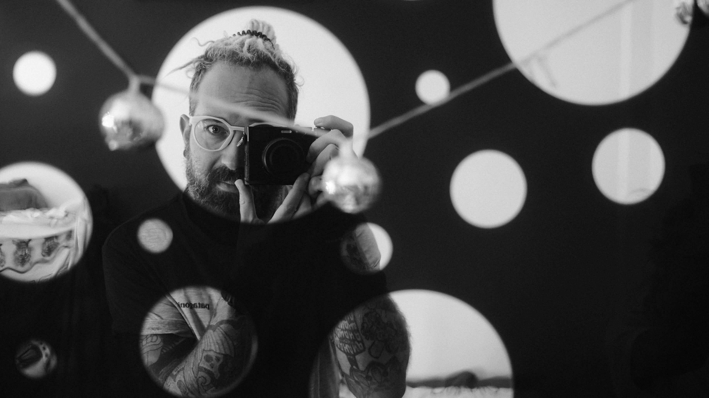

Hey there stranger! ▓▒░
I'm Krisztián, a Multidisciplinary Designer and Design Engineer who has been crafting the world wide web for more than two decades.

¬ About me ▫
Started my journey with reverse engineering websites, learning the ins and outs of the early web with tools like Netscape Composer, MS Frontpage, Dreamweaver... just to put you on memory lane...
"I was there, Gandalf. I was there 3000 years ago..."
Touching ground in the advertising, gaming, adult entertainment, educational and SaaS industries in diverse roles collecting not just good memories but wide-ranging experience from project management to digital accessibility.
I like to consider myself a great team player and result-oriented professional, who doesn't bullshit but focuses on the cleanest and most efficient solutions delivered utilising all the available knowledge within the team and beyond.
Personally I'm not a fan of walled gardens, airtight separation between design and development. I believe in transparency, communication and collaboration. If a concept is faster to implement in code than spending countless hours in Figma (not even talking about the shortcomings of design software compared to code) I'm more than happy to jump on the keyboard. Actually preferring to prototype in the browser rather than in any other design tool.
I'm all in for indie and open web, user-friendly interfaces and clean, single purpose products.
¬ Past projects ▫▪
During my career I had the chance to work with some of the biggest brands on the planet together with small startups, helping them to improve their products, providing them with the best design solutions. Just to mention a few: Microsoft, LogmeIn, LastPass, Crytek, LiveJasmin (as Product designer), and Volvo, Absolut Vodka, Milka, Nivea (as Digital Art Director) and the list goes on and on.
Some short case studies:
- LastPass a11y Overhaul - 2021
Complete accessibility refactor, 14% increase in compliance - Warface Auction House - 2016
Player-to-player auction house for Crytek's FPS - Glamorous Camsite - 2014
Designing the standalone glamorous version of LiveJasmin
Also I'm building my own FOSS webapps under the name Lost Signals:
- Ghosted (beta) - 2026
A simple job application logbook for job seekers - Kaja - Soon!
Neurodivergent friendly meal tracker with AI assistance
¬ What I'm good at ▫▫
While my main area of expertise is digital product design, I can help you with fine-tuning your strategy, development workflow, branding or auditing current product accessibility, UX flows and technical shortcomings.
For design primarily using Figma these days, but I'm comfortable with any design software, end of the day they are all the same, not the tool that defines the designer.
For coding and building I'm using VSCodium with the help of DeepSeek Harness, but not emotionally attached to any of the dev environments out there. I always look for efficiency and productivity, not the latest hyped features.
Tech stack wise I'm most proficient with HTML, CSS and JavaScript and have fond memories of PHP. Although I'm not chasing the latest trends, I can pick up any other language if needed, I still think that it's not the tech that defines the human behind the keyboard - everything is just a tool to achieve the goal and a matter of comfort.
¬ Personal life ▫▪▪
Slow travelling the world with my wife and our two cats. Currently in Thailand 🇹🇭 and studying traditional Thai massage.
In the meantime I like to take photos (pretty much obsessed with black and white pictures), have long walks on the beach and play "weird" electronic instruments or my handpan (sometimes even both together).
¬ Interested in working together? ▫▪▫
Drop a line to the hey@krisztian.wtf inbox and let's have a chat.
If you are into HR stuff, you can read my résumé (oh là là), or you can check me on LinkedIn